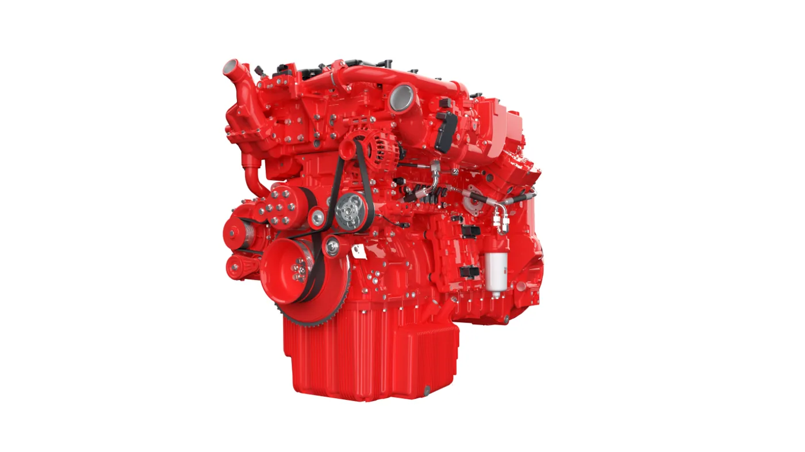

Cummins presentó el 14 de septiembre de 2026 su propuesta tecnológica para IAA Transportation, en Hannover. El anuncio reunió los motores B7.2, X10 y X15N con soluciones eléctricas de Accelera, su negocio de tecnologías de cero emisiones. El mensaje central es que la renovación del transporte no seguirá una única ruta.
Entre las novedades comunicadas aparece un plan para ampliar la fabricación de baterías en Europa mediante una instalación española dedicada a la plataforma Advanced LFP. Cummins lo presenta como una inversión para atender aplicaciones comerciales, incluidos camiones y ómnibus. Es un plan industrial anunciado, no una confirmación de entregas argentinas.
Tres motores, tres propuestas
En su catálogo del evento, Cummins describe el B7.2 como un diésel para aplicaciones medianas y de trabajo, con hasta 261 kW y 1.350 Nm. El X10 Euro 7, compatible con hibridación, llega hasta 336 kW y 2.240 Nm. Por su parte, el X15N para Europa utiliza gas natural y anuncia hasta 485 kW y 3.000 Nm.
Son valores máximos publicados por el fabricante para esas propuestas. No indican que todas las versiones ofrezcan esas prestaciones ni equivalen a una ficha de un camión completo. La selección del vehículo requiere conocer la configuración que realmente ofrezca cada marca.
Qué significa la plataforma HELM
La comunicación de Cummins vincula B7.2 y X10 con HELM, una estrategia de arquitecturas que busca ofrecer opciones tecnológicas y reducir complejidad para los fabricantes. También destaca la primera exhibición europea del X15N y la capacidad híbrida del X10. Una plataforma que contempla alternativas no convierte a cada motor individual en apto para cualquier combustible.

La electrificación aparece junto a la combustión
El material de la feria incluye el eje eléctrico 14Xe de Accelera y baterías LFP modulares. También muestra componentes como el sistema de postratamiento U-Module y el eje Meritor 17X HE. Esta variedad ayuda a entender que Cummins presenta tecnologías para integrar en vehículos, no una única gama de camiones terminados.
Análisis de Zabala Repuestos. La coexistencia de alternativas invita a cambiar la pregunta. En lugar de buscar un ganador universal entre diésel, gas y electricidad, conviene preguntar qué solución puede sostener una operación concreta. Un recorrido fijo y una tarea que cambia todos los días no plantean necesariamente las mismas necesidades.
Cómo comparar sin quedarse en la potencia
Una comparación útil debería comenzar con una descripción del trabajo: carga habitual, recorridos, cantidad de turnos y lugares de abastecimiento. Después corresponde pedir una propuesta de vehículo completo. La cifra máxima de un motor expuesto no permite, por sí sola, estimar productividad ni costo por viaje.
También hay que conservar el contexto de cada promesa. Una mejora frente a una referencia determinada no es un ahorro garantizado para cualquier flota. Solicitar condiciones de comparación y una prueba representativa permite transformar una presentación tecnológica en información útil para decidir.
Qué interesa a los talleres argentinos
El anuncio no confirma incorporación local de estos motores, precios ni fechas de comercialización argentina. Para el taller, el paso prudente es seguir las fichas de las versiones efectivamente ofrecidas y consultar su documentación. Compartir fabricante o familia no demuestra compatibilidad de piezas.
- Identificar la versión exacta antes de comparar prestaciones.
- Consultar el respaldo disponible en las rutas de trabajo.
- Distinguir una presentación de feria de una entrega comercial.
- Solicitar condiciones de mantenimiento y documentación del conjunto.
La novedad de esta semana muestra una industria que amplía opciones, sin resolver todas las aplicaciones con una sola tecnología. Su impacto argentino dependerá de decisiones comerciales y de integración posteriores. Hasta entonces, el valor del anuncio está en conocer qué soluciones se están preparando y qué preguntas habrá que hacer cuando lleguen ofertas concretas.